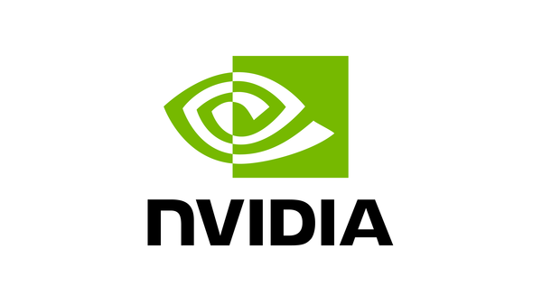
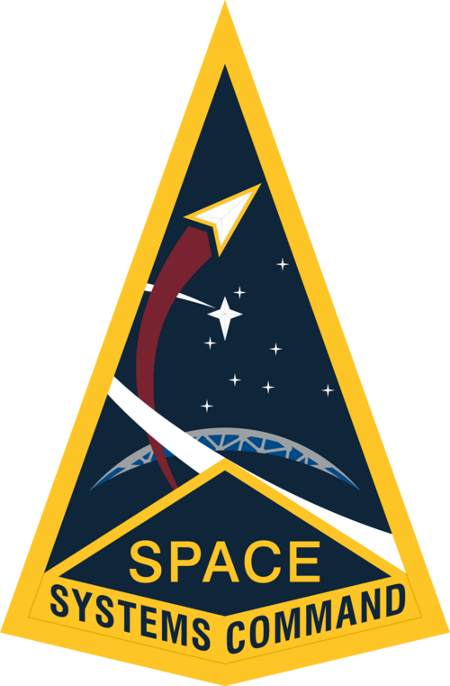
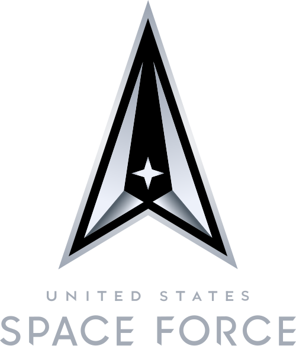
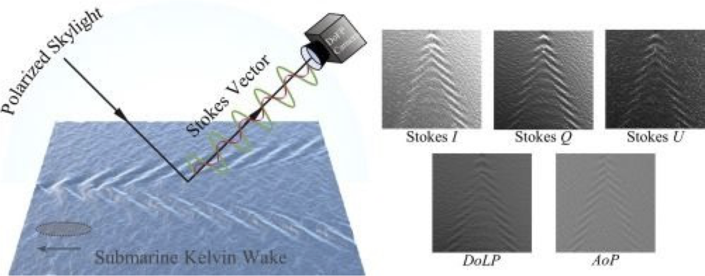

April 2026 · Distribution A, Proprietary, Not for Public Release
Seeking
Sponsor Letter of Intent from SOF PEO SDA or SOF PEO TIS for SpaceWERX STRATFI matching funds.
see §11
Space-ISR Infrastructure for Special Operations Forces
A VLEO constellation with onboard AI, delivering real-time intelligence directly to the SOF operator. Payload capacity reserved for SOF-peculiar missions.
Transformational Capability
A VLEO constellation that detects in orbit and delivers to the operator in real time. High-frequency revisit on a scalable, cost-effective, payload-abstracted architecture.
SOF Outcome
Persistent target custody, GPS-denied resilience, and rapid cross-cueing between satellites and aerial / surface SOF assets.
Precursor Launch
Q4 2027 on SpaceX, with reserved capacity available for SOF-peculiar payloads and missions, tasking priority, and AI models.
Active Government Engagements
AFRL (D2P2), MDA (SHIELD IDIQ), USSOCOM (participated in TE), NASA Goddard (LOI), JIATF-South (counter-narcotics & dark vessel detection).
Bottom Line Up Front
DeepSat is a production-contracted VLEO space-ISR company. Active DAF D2P2 contract (FA864925P0298), prime position on the MDA SHIELD $151B IDIQ, CMMC-2 demonstrated, precursor satellite manifested for Q4 2027 launch on SpaceX.
We deliver SOF-relevant capability now. Persistent target custody, GPS-denied resilience, bi-directional cross-cueing to aerial and maritime assets, polarimetric target discrimination, and payload capacity explicitly reserved for SOF-peculiar missions.
Primary ask from SOCOM: end user AND funder. We need a sponsor Letter of Intent from SOF PEO SDA or SOF PEO TIS for SpaceWERX STRATFI matching funds. This unlocks government co-investment at commercial pace and establishes SOCOM as a committed operational user of reserved SOF-peculiar capacity.
Space ISR and Orchestration Platform
In VLEO, delivering rapid and resilient space intelligence directly to the warfighter.
DeepSat Infrastructure
+
AI
DeepSat Platform
AI IntelligenceSensor FusionOperations
Operator
Ships found, drones tasked, operators act in real time
Defense-first, dual-use. Delivered as a subscription, not a box.
1. DeepSat in One Paragraph
DeepSat is a national-security space company building Orion's Belt, a Very Low Earth Orbit (VLEO) ISR constellation with onboard AI, multi-modal sensing, and laser backhaul, delivered as an end-to-end platform rather than raw imagery. Founded by operators with Silicon Valley scale-up experience and aerospace heritage (CTO led Armenia's first national satellite), DeepSat is under active contract with the Department of the Air Force (DAF X25.5 CSO Direct-to-Phase II, Contract FA864925P0298), holds a prime position on the MDA SHIELD $151B IDIQ, has demonstrated CMMC-2 to AFRL, and is scheduled to fly a precursor mission Q4 2027 on SpaceX. Our commercial, COTS-driven architecture, integrating Redwire's TRL-9 VLEO bus, Satlantis <1m VNIR+SWIR optics, Kepler laser backhaul, and NVIDIA onboard compute, lets us move at startup speed while meeting defense-grade security and reliability.
2. What We Understand About Special Operations Forces
SOF account for 3% of U.S. military personnel but roughly 35% of casualties. Intelligence is not a force multiplier for SOF, it is a survival requirement. Three operational realities drive our platform design:
22
Partner nations & agencies across EastPac & Caribbean
6–12 hr
Legacy satellite update latency on moving targets
44 hr
Typical MQ-9 refuel cycle where custody is lost
36K+
Tracked objects in LEO (growing counter-space threat)
A fight measured in minutes, intelligence measured in hours. Semi-submersibles, go-fast vessels, and low-profile craft disappear before legacy ISR cycles complete. Adversaries exploit geography, weather, and jurisdictional seams.
Custody is mission-critical and hard to maintain. SOF must cross-cue, bi-directionally hand off target custody, between aerial, maritime, and space assets as each rotates out for refuel, retasking, or weather.
SOF-peculiar authority is under-utilized. USSOCOM holds special procurement authorities for capabilities unique to special operations. Most commercial space providers sell generic imagery feeds; SOF needs a platform it can program.
SOF Scenarios & Platform Response
Proprietary · Not for Public Release
3. SOF Scenarios DeepSat Is Built For
Rather than pitch a single point capability, we design for the full envelope of SOF ISR needs. Below are three representative scenarios drawn directly from stakeholder conversations at SOFLE and exercises in planning. Each maps to the same underlying platform.
Scenario 1Maritime Interdiction with Persistent Custody
An MQ-9 tracks a go-fast vessel in the Caribbean, then must break station to refuel, a 44-hour custody gap. A DeepSat satellite autonomously accepts custody, maintains pattern-of-life tracking using optical, polarimetric, RF, and AIS fusion, flags AIS spoofing, and cross-cues the returning MQ-9 with updated position and vector in real time. Interdiction proceeds without loss of track.
Platform capabilities engaged: onboard AI detection (~200 ms), <30-sec latency to operator, cross-cueing orchestration, payload-abstracted polarimetry for glare-defeating dark-vessel detection, chain of custody.
Scenario 2Operations in Contested & GPS-Denied Environments
In a peer conflict, GPS constellations in MEO/GEO are degraded or destroyed. Ground SOF teams require positioning without GPS. DeepSat's VLEO constellation, below the debris belt and below the principal ASAT threat envelope, remains operational. Its predictable emissions act as a signal of opportunity for ground positioning. Tasking, model updates, and tactical comms flow over optical uplink, outside traditional RF-vulnerable pathways.
An Army SOF PSYOP element needs rapid pattern-of-life on a specific port to support a narrow time-window effect. Rather than purchasing an imagery subscription and waiting days for analysis, the operator tasks DeepSat per-mission through an agentic interface, receives real-time alerts only when specific anomaly conditions trigger, and geofences follow-on tasking to the developed target area. Raw imagery never leaves the platform; the operator receives decisions.
Platform capabilities engaged: per-mission tasking, agentic / MCP-compatible command integration, data-on-demand transport, mission-aligned AI models, chain of custody for traceability.
Why a platform, not a point solution: each scenario above would traditionally require a different vendor, sensor, and tasking cycle. DeepSat delivers all three on a single, programmable substrate, with additional scenarios (space weather, border patrol persistent ISR, disaster response) available as software-configurable missions.
The Platform, Four Pillars, Six Layers
Proprietary · Not for Public Release
4. Three Layers, One System
Rapid and resilient space intelligence, delivered directly to the warfighter.
DeepSat's architecture is a horizontal integration strategy. We do not rebuild what industry already does well. Best-in-class commercial space hardware at the Platform layer, DeepSat's proprietary intelligence core in the middle, and operator-facing products on top. This is how we move at commercial pace while delivering defense-grade capability: integrate, secure, make it programmable.
The Intelligence layer is where DeepSat is proprietary and defensible. The Platform and Products layers are composed from deliberately chosen commercial components, the same approach that has let Anduril, SpaceX, and Palantir out-execute traditional primes. Swapping a partner does not change the intelligence core; adding a new sensor does not change the AI stack. Horizontal integration is how we stay fast.
Four Pillars
SPEED
Onboard AI at the edge, <30 min revisit, <30 sec data latency, agile re-tasking. Built for battle rhythm, not legacy collection cycles.
QUALITY
Multi-modal fusion (optical, RF, AIS, polarimetry), ~4× higher SNR from low look angles, foundational AI reducing false positives.
Standardized interface lets new sensors (polarimetric, RF, SIGINT, hyperspectral) integrate without redesigning the bus or AI stack.
Active polarimetry study (Panthier/Jayada), RF/AIS receivers, UHF/LoRa decoders
Software Platform
AI models run onboard (~200 ms detection), with continuous learning and mission-aligned model swaps. Agentic / MCP-compatible for agent-to-agent integration.
Proliferated VLEO constellation with inter-satellite laser backhaul. "Always connected to the internet", data retrievable while over the event, not just a ground station.
DeepSat operates on a commercial cadence, not a 10-to-15-year traditional acquisition arc. We use COTS components wherever TRL-9 heritage exists, integrate through standard interfaces, and iterate software independently of hardware. The result is a precursor satellite scheduled to launch Q4 2027 on SpaceX, less than four years after company founding, with follow-on proliferation paced by government and commercial demand rather than program timelines.
The Constellation
Proprietary · Not for Public Release
5. The Constellation: From Detection to Action in Minutes, Not Hours
SOF cannot wait on a station pass. DeepSat's constellation is engineered so that a detection in orbit becomes a notification on an operator's device before the target leaves the frame. The four elements below work together as a single pipeline.
Onboard AI processing
GPU processes imagery in orbit. Only alerts and compressed data packets downlinked. No raw bulk imagery to ground.
LEO laser relay
Inter-satellite optical links push data to ground through a LEO backhaul mesh. No waiting on a station pass.
Below the aerial layer
Drones and aircraft have limited dwell and lose custody on refuel. VLEO is persistent and cross-cues the returning aerial asset.
Live video & alerts
Real-time detection and alerting to operators over existing C2 channels and TAK-compatible endpoints.
Always connected
TCP/IP end to end across the constellation mesh. Every satellite is both a sensor and a router.
What this means for SOF: an MQ-9 breaking station does not break custody. A go-fast vessel detected from VLEO is queued to the returning aerial asset with updated position, vector, and pattern-of-life, over the operator's existing comms, in time to interdict.
The Service
Proprietary · Not for Public Release
6. The Service: Live Data and Intelligence API
Designed to integrate with complementary sensing systems and external analytical workflows.
1
Customer subscribes to an anomaly type on the Notification Center (e.g. dark-vessel rendezvous, GPS-spoofed track, thermal anomaly over AOI).
2
Onboard GPU runs detection in orbit. A match generates a detection event: anomaly type, compressed packet, full-data reference ID.
3
Event sent in real time over TCP/IP through the LEO backhaul mesh. No waiting on a ground pass.
4
Notification Center publishes the event to every subscribed customer system.
5
Customer system acts on the notification, automatically, agentically, or routed to an operator via existing C2.
6
If deeper context is needed, customer calls the Data Engine REST API with the reference ID.
7
Data Engine retrieves full data, full-resolution frame, adjacent frames, sensor-fusion slices, from onboard storage in real time.
8
Customer takes follow-on action on the enriched data: interdict, cross-cue, alert partner force.
Why this matters for SOF-peculiar missions. New sensors (polarimetric, RF, SIGINT, hyperspectral) come in through the payload abstraction layer without changing the API. The same Pub-Sub contract that alerts on a cargo vessel alerts on a SOF-defined signature. Reserved capacity means reserved anomaly types, reserved tasking, reserved compute.
Partners & Government Engagements
Proprietary · Not for Public Release
7. Industry Partners Powering the Stack
Every layer of the DeepSat platform is delivered with best-in-class commercial partners already integrated into active engineering flows. These relationships are paper, not handshake, MOUs, POs, and joint engineering are in motion.
Redwire
TRL-9 VLEO-optimized satellite bus; joint integration flow; Aug 2026 Maritime TE partner.
Satlantis
<1 m VNIR + SWIR TRL-9 imaging payload with multiband real-time video.
Kepler
Inter-satellite laser backhaul, real-time data delivery to ground.

NVIDIA
IGX Orin 500 GPU for onboard AI/ML inference,~200 ms detection.
NASA Goddard
Letter of Intent, first-of-kind VLEO atmospheric and space-weather datasets.
USC ISI
STTR Phase I/II partner for adaptive & intelligent space systems (SF25D-T1201).
Edge Autonomy
Drone asset for Aug 2026 Maritime TE satellite ↔ aerial cross-cueing demo.
8. Government Engagement Pipeline
DeepSat's government engagements span active contract, signed LOI, operational experimentation, submitted proposals, and theater alignment. Status reflects April 2026.
Active — contract, LOI, or flight hardware in motionIn Progress — submitted or under evaluationTheater Alignment
Air Force Research Laboratory (AFRL)
Active D2P2 contract (DAF X25.5 CSO #FA864925P0298, $1.25M). Government sponsor unlocking TAK SDK. CMMC-2 demonstrated.
Missile Defense Agency (MDA)
Prime on MDA SHIELD $151B IDIQ. MDA-sponsored facility clearance pathway.
USSOCOM — SOF AT&L / PEO SDA
Participated in USSOCOM TE (April 2026); Maritime TE August 2026 in planning; active engagement with PEO SDA and S&T.
Signed Letter of Intent — atmospheric / space-weather data products from VLEO overflight regimes unavailable elsewhere.

Space Systems Command (SSC)
STTR 2025.D SF25D-T1201 submission via USC ISI; SSC Space Sensing and SSC BMC3 identified as follow-on matching pathways.
INDOPACOM
Named priority theater for VLEO maritime domain awareness; persistent ISR for peer-competition standoff.

Space Force South (SpOC-S)
Regional coordination partner for SOUTHCOM-aligned operational experimentation.
Credibility by position, not promise. DeepSat holds simultaneous active D2P2, MDA SHIELD IDIQ prime, NASA Goddard LOI, USSOCOM TE participation, and JIATF-South flight-test engagement — with CMMC-2 demonstrated.
DeepSat is manifested on a Q4 2027 SpaceX launch carrying the first operational node of the Orion's Belt constellation. The precursor validates the full stack, Redwire VLEO bus, Satlantis optics, NVIDIA onboard AI, Kepler laser backhaul, polarimetric payload study, and the operator-facing data service, in orbit. This is the transition point from experiment to operational infrastructure.
The Ask: Reserved SOF-Peculiar Capacity
DeepSat will reserve a portion of precursor and follow-on mission resources,payload bay, onboard compute, bandwidth, and tasking priority, for USSOCOM SOF-peculiar use, procurable under SOCOM's existing authorities.
On-orbit GPU cycles for SOF-trained models and mission-aligned inference without shared-tenancy constraints.
Tasking priority lanes so SOF units can invoke per-mission collection through their own command channels, including via the Chaos platform (PEO SDA) and TAK/ATAK.
Classified-path delivery options via facility-cleared infrastructure (MDA-sponsored) and optical uplink for model updates in denied environments.
This reservation can be procured via CRADA (SOCOM matching funds plus resource access, private-match-eligible), non-competitive SBIR Phase III as a direct extension of D2P2, TACFI/STRATFI, or a Title 10/50 dual instrument where appropriate.
10. Why This Model Is Right for SOF, Now
SOF-peculiar authority is the right tool. SOCOM can procure capabilities unique to SOF without waiting on Service-wide acquisition timelines. A programmable platform with reserved capacity is precisely the shape that authority was built for.
Commercial pace matches the threat. Adversary maritime tactics, AIS spoofing, semi-submersibles, and counterspace posture all evolve faster than traditional programs of record. DeepSat's agile architecture, COTS hardware, software-defined missions, on-orbit model updates, closes that gap.
Dual-use economics lower unit cost. Commercial and allied demand (NASA, allied maritime, JIATF-S, NORSOCOM, UK MOD) carries the infrastructure; SOF capacity reservation is an additive layer, not the sole sustainment base.
No single-point failure. VLEO-below-ASAT orbits, self-cleaning regime, COTS-abstracted supply chain, hardware-agnostic software, the platform is designed to survive the kinetic and cyber contested environments SOF expects.
Path Forward & Contact
Proprietary · Not for Public Release
11. Path Forward
Primary Ask
SpaceWERX STRATFI Matching
DeepSat is seeking a sponsor Letter of Intent from SOF PEO SDA or SOF PEO TIS for STRATFI matching funds. This is the single fastest pathway for SOCOM to act as both operational end user and co-funder, unlocking government co-investment at commercial pace and reserving SOF-peculiar capacity on the Q4 2027 precursor.
Beyond the primary ask above, DeepSat is seeking government partners willing to co-define SOF-peculiar mission profiles on the precursor and subsequent proliferated capacity. The following pathways are open and parallel, we recommend pursuing them in combination:
Capability Brief (this submission). Present the full platform and SOF-peculiar reservation model to the USSOCOM and defense-agency audience. Outcome: identify stakeholders for deeper engagement.
Maritime TE, August 2026 (Idaho). Observe or participate in the live cross-cueing demonstration: Redwire Group-2 drone simulating VLEO repass every 10 min, Edge Autonomy queued asset, full detect-analyze-cross-cue-interdict pipeline on a representative maritime target.
CRADA, SOF-Peculiar Capacity Instrument. Establish the formal mechanism for SOCOM to reserve precursor capacity, including (where appropriate) in-kind resource access such as C-130 or MQ-9 time for payload characterization.
Broad Agency Announcement, Space-Based ISR. Quad chart submission aligned with SOCOM's listed priority capability, referencing this white paper for the full architecture.
Non-Competitive SBIR Phase III. DeepSat qualifies under SBIR statutory authority as a direct extension of the current AFRL D2P2 effort, an efficient vehicle for follow-on SOF-specific scope.
Additional STRATFI sponsor pathways. Beyond SOF PEO SDA / TIS (the primary ask above), STRATFI sponsorship is also available from SSC Space Sensing, SSC BMC3, Army, Navy, and C5ISR.
We need warfighter access. Integrating DeepSat to the tactical edge, including in denied environments, is the final validation step. We are specifically looking to connect with SOF units to test concepts for connecting directly to the DeepSat constellation using existing organic comms systems.
12. Summary
DeepSat is not asking SOCOM to buy a subscription. We are offering SOCOM something rare: early-stage influence over a space-ISR platform that is under contract, integrated with best-in-class partners, scheduled to fly, and explicitly designed to accept SOF-peculiar missions. The platform already delivers maritime custody, cross-cueing, GPS-denied resilience, and polarimetric target discrimination on a single substrate. What we are adding, and what only SOCOM can authorize, is reserved capacity for the missions only SOF will ever run.
Los Angeles, CA · CAGE 9XB24 · CMMC-2 demonstrated
Active Contract Vehicle
DAF X25.5 CSO D2P2, #FA864925P0298
This white paper presents transformational technology to USSOCOM and supporting defense agencies. DeepSat is prepared to present the enclosed material in a 20-minute brief with live platform demonstration.
Appendix: Polarimetry
Proprietary · Not for Public Release
Appendix
Polarimetry: detecting vessels that hide
Electro-optic films enable polarimetric imaging, detecting material and surface differences invisible to normal cameras. Vessels hiding from conventional surveillance, through wake dispersal, radar-absorbing coatings, or low-contrast paint, become visible.
Capabilities
Sea-surface target enhancement via Stokes vectors
Submarine wake detection (Kelvin wake patterns)
Material and surface discrimination
Active R&D with helicopter experiments underway
Polarimetry is integrated via DeepSat's payload abstraction layer, a new sensor does not change the AI stack or the API contract. The same Pub-Sub subscription that alerts on a vessel alerts on a polarimetric signature.
The Vision
Input
Satellite with electro-optic polarization filter captures polarized light reflected off ocean surface.
↓
Processing
Compute polarization parameters (Stokes I, Q, U; DoLP; AoP) to separate reflected vs. refracted light.
↓
Output
Wake patterns, surface anomalies, and material signatures invisible in normal imagery.

Standard optical imagery, Submarine Kelvin WakePolarimetric enhancement: hidden vessels revealed
Why polarimetry matters for SOF. Adversary vessels designed to defeat conventional optical and radar surveillance, low-freeboard submersibles, wake-suppressing hulls, coatings designed to confuse SAR, leave polarimetric signatures. A SOF-reserved polarimetric payload on the precursor is one of several SOF-peculiar capabilities DeepSat's architecture is built to accept.